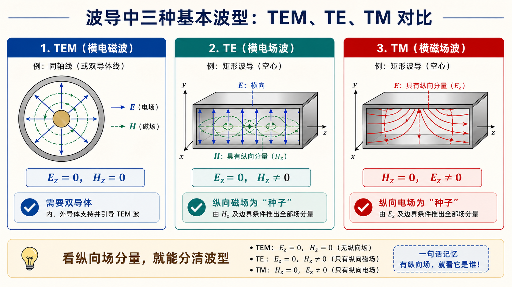

00 · 术语与路线图（Lec10–Lec11）§

图：传输线常见 TEM 需要双导体；进入空心波导后，边界条件把问题推向 TE/TM 模式和横截面本征值。
本节你要能回答什么§
- 「受限空间」与「自由空间」传播，讨论问题时默认的前提差在哪里？
- 教材里常写的 $k$（介质波数）、$\beta$（沿 $z$ 相位常数）、$k_{\mathrm c}$（截止波数）分别由谁决定、在什么关系式里成对出现？
- Lec10–Lec11 在整章「规则波导」里处于哪一段：先解决什么、故意延后什么？
一句话物理图像§
波导是在金属或介质边界约束下的导行系统：同一几何下场不能随意取，只能以若干离散模（波型）存在；每个模有自己的截止与色散。Lec10–Lec11先把方程怎么来、模怎么分、矩形域上怎么解出纵向分量与截止讲清楚，为后面 Lec11 以后更一般的场结构、传输参数（相速、群速、阻抗等）打地基。
从传输线跨到波导§
前面传输线章节里，我们主要关心沿线方向的变化：$\Gamma(z)$ 怎么转、$Z_{\mathrm{in}}(z)$ 怎么变。到了波导，问题多了一层：横截面上也必须满足金属壁边界条件。
所以波导题通常分成两步：
- 先在横截面上解出允许的场分布，也就是模。
- 再看这个模沿 $z$ 方向能不能传播，传播时 $\beta$ 是多少。
如果只记一个关系，先记：
$$ k^2=k_{\mathrm c}^2+\beta^2. $$
它的白话版本是：工作频率给出的总波数 $k$，要先拿出一部分满足横截面边界 $k_{\mathrm c}$，剩下的才给轴向传播 $\beta$。如果连横截面门槛都不够，就没有轴向传播。
与《第三次教学大纲》中 Lec10–Lec11 的对应（摘录）§
以下内容对应课程第三次大纲中 Lec10-Lec11 的教学要点，便于你对照课堂。
- 研究对象：受限空间里的电磁波传输；与自由空间传播对比。
- 推导线：由 Maxwell 方程 $\to$ 波动方程 $\to$ 时谐假设下齐次 Helmholtz；广义传输线视角下针对不同波型写传输线方程；分离变量法求波动方程的解。
- 教材章节：北理工版 §2.1；华科版 §2.1–§2.2。
- 知识要点：介质波数（大纲中记为与相移常数相关）与 $\beta$ 的区分；波导边界条件的表达与物理含义；截止波数 $k_{\mathrm c}$、截止波长 $\lambda_{\mathrm c}$、截止频率 $f_{\mathrm c}$ 的定义、物理含义及相互关系。
说明：同一阶段后面还有 Lec11～12、Lec13–16 等条目；本文件夹只覆盖 Lec10-Lec11，避免与后续「波导波长、色散、矩形波导工程计算」混淆。
符号速查（与本目录各册一致）§
| 记号 | 常见名称 | 含义提要 |
|---|---|---|
| $k$ | 介质波数 | $k=\omega\sqrt{\mu\varepsilon}$，由频率与填充介质决定 |
| $\beta$ | 沿 $z$ 的相位常数 | 导行时出现在 $\mathrm e^{-\mathrm j\beta z}$；无耗时常为实数 |
| $k_{\mathrm c}$ | 截止波数 | 由截面几何 + 边界条件 + 模指标决定的离散本征值 |
| $a,\,b$ | 矩形波导内尺寸 | 常取宽边 $a$、窄边 $b$，域 $0\le x\le a,\ 0\le y\le b$ |
更全的波数、波长对照见 第三次作业解答 · 符号与导读。
学习路线图（建议）§
flowchart LR
A[01 波型 TEM/TE/TM] --> B[02 Helmholtz 与分离变量]
B --> C[03 矩形边界与 kc 截止]
C --> D[04 TM11 推导套路]
D --> E[05 自检与误区]